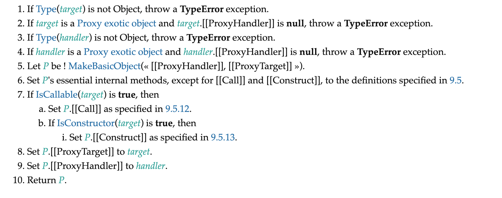

Proxy的原理以及在Vue3中的使用Proxy代替Object.defineProperty实现reactive
基本使用
1 | var handler = { |
vue3中的实现
代码都在Proxy
reactive
实例demo
1
2
3var a = Vue.reactive({
a: 1
});Vue.reactive这个api是从@vue/reactivity这个包导出的
1
2
3
4
5
6
7
8
9
10
11
12export function reactive(target: object) {
// if trying to observe a readonly proxy, return the readonly version.
if (target && (target as Target)[ReactiveFlags.IS_READONLY]) {
return target
}
return createReactiveObject(
target,
false,
mutableHandlers,
mutableCollectionHandlers
)
}createReactiveObject最终会执行以下代码,new 了一个Proxy的实例
1
2
3
4
5
6
7
8
9const observed = new Proxy(
target,
collectionTypes.has(target.constructor) ? collectionHandlers : baseHandlers
)
def(
target,
isReadonly ? ReactiveFlags.READONLY : ReactiveFlags.REACTIVE,
observed
)collectionHandlers是给collectionTypes使用的，主要有Set, Map, WeakMap, WeakSet，其他的数据类型都是用baseHandlers
对基本数据类型的处理
collectionHandlers和baseHandlers又有好几种:
1
2
3
4
5
6
7
8
9
10
11import {
mutableHandlers,
readonlyHandlers,
shallowReactiveHandlers,
shallowReadonlyHandlers
} from './baseHandlers'
import {
mutableCollectionHandlers,
readonlyCollectionHandlers,
shallowCollectionHandlers
} from './collectionHandlers'mutableHandlers会代理5种操作
- 其中
get = createGetter()1
2
3
4
5
6
7
8
9
10
11
12
13
14
15
16
17
18
19
20
21
22
23
24
25
26
27
28
29
30
31
32
33
34
35
36
37
38
39
40
41
42
43
44
45
46
47
48
49
50
51
52
53
54
55
56
57
58
59
60
61export const mutableHandlers: ProxyHandler<object> = {
get,
set,
deleteProperty,
has,
ownKeys
}
function createGetter(isReadonly = false, shallow = false) {
return function get(target: object, key: string | symbol, receiver: object) {
if (key === ReactiveFlags.IS_REACTIVE) {
return !isReadonly
} else if (key === ReactiveFlags.IS_READONLY) {
return isReadonly
} else if (
key === ReactiveFlags.RAW &&
receiver ===
(isReadonly
? (target as any)[ReactiveFlags.READONLY]
: (target as any)[ReactiveFlags.REACTIVE])
) {
return target
}
const targetIsArray = isArray(target)
if (targetIsArray && hasOwn(arrayInstrumentations, key)) {
return Reflect.get(arrayInstrumentations, key, receiver)
}
const res = Reflect.get(target, key, receiver)
if (
isSymbol(key)
? builtInSymbols.has(key)
: key === `__proto__` || key === `__v_isRef`
) {
return res
}
if (!isReadonly) {
track(target, TrackOpTypes.GET, key)
}
if (shallow) {
return res
}
if (isRef(res)) {
// ref unwrapping, only for Objects, not for Arrays.
return targetIsArray ? res : res.value
}
if (isObject(res)) {
// Convert returned value into a proxy as well. we do the isObject check
// here to avoid invalid value warning. Also need to lazy access readonly
// and reactive here to avoid circular dependency.
return isReadonly ? readonly(res) : reactive(res)
}
return res
}
}
- 其中
先通过Reflect.get获取到原始值
只要不是readonly的话，就会使用track进行记录: 用一个全局的targetMap来存所有target，每个target有一个对应的depsMap，存储每个被proxy的key以及其依赖activeEffect。如果activeEffect是undefined，就不会计入依赖了。那这个activeEffect是在什么时候会被赋值呢？是在执行render的时候，会有setupRenderEffect，会执行effect方法，effect方法中会做相应处理，activeEffect就会变成当前执行render时的一些操作，所以当执行set时，render就会被重新执行
1
2
3
4
5
6
7
8
9
10
11
12
13
14
15
16
17
18
19
20
21
22
23
24
25export function track(target: object, type: TrackOpTypes, key: unknown) {
if (!shouldTrack || activeEffect === undefined) {
return
}
let depsMap = targetMap.get(target)
if (!depsMap) {
targetMap.set(target, (depsMap = new Map()))
}
let dep = depsMap.get(key)
if (!dep) {
depsMap.set(key, (dep = new Set()))
}
if (!dep.has(activeEffect)) {
dep.add(activeEffect)
activeEffect.deps.push(dep)
if (__DEV__ && activeEffect.options.onTrack) {
activeEffect.options.onTrack({
effect: activeEffect,
target,
type,
key
})
}
}
}set=createSetter()，这个方法中会执行trigger方法，1
2
3
4
5
6
7
8
9
10
11
12
13
14
15
16
17
18
19
20
21
22
23
24
25
26
27
28
29
30
31function createSetter(shallow = false) {
return function set(
target: object,
key: string | symbol,
value: unknown,
receiver: object
): boolean {
const oldValue = (target as any)[key]
if (!shallow) {
value = toRaw(value)
if (!isArray(target) && isRef(oldValue) && !isRef(value)) {
oldValue.value = value
return true
}
} else {
// in shallow mode, objects are set as-is regardless of reactive or not
}
const hadKey = hasOwn(target, key)
const result = Reflect.set(target, key, value, receiver)
// don't trigger if target is something up in the prototype chain of original
if (target === toRaw(receiver)) {
if (!hadKey) {
trigger(target, TriggerOpTypes.ADD, key, value)
} else if (hasChanged(value, oldValue)) {
trigger(target, TriggerOpTypes.SET, key, value, oldValue)
}
}
return result
}
}trigger方法
- 从targetMap中获取depsMap
- 如果type === TriggerOpTypes.CLEAR，那么就把depsMap.forEach(add)
- 如果taget时数组，并且key时
length,那就只对length这个属性或者在新增的属性上执行add - add操作就是把所有需要执行的dep遍历一遍，判断是否需要需要加入effects
- 最后遍历执行effects里面的所有effect
1 | export function trigger( |
对Map等的处理
- 使用collectionHandlers里的方法,handler只代理一个方法那就是get
在get里面会把对应原型上的方法都代理了，所以当访问proxy对象上的方法时，get就会返回instrumentations里的对应方法
1
2
3
4
5
6
7
8
9
10
11
12
13
14
15
16
17
18
19
20
21
22
23
24
25
26
27
28
29
30
31
32
33
34
35
36
37
38
39
40
41
42
43
44
45
46
47
48
49
50
51
52
53
54
55
56
57
58
59
60
61
62
63
64
65
66
67
68
69
70
71
72
73
74
75
76
77
78
79
80
81
82
83
84
85
86
87
88
89
90
91
92
93
94
95
96
97
98
99
100
101
102
103
104
105export const mutableCollectionHandlers: ProxyHandler<CollectionTypes> = {
get: createInstrumentationGetter(false, false)
}
function createInstrumentationGetter(isReadonly: boolean, shallow: boolean) {
const instrumentations = shallow
? shallowInstrumentations
: isReadonly
? readonlyInstrumentations
: mutableInstrumentations
return (
target: CollectionTypes,
key: string | symbol,
receiver: CollectionTypes
) => {
if (key === ReactiveFlags.IS_REACTIVE) {
return !isReadonly
} else if (key === ReactiveFlags.IS_READONLY) {
return isReadonly
} else if (key === ReactiveFlags.RAW) {
return target
}
return Reflect.get(
hasOwn(instrumentations, key) && key in target
? instrumentations
: target,
key,
receiver
)
}
}
const mutableInstrumentations: Record<string, Function> = {
get(this: MapTypes, key: unknown) {
return get(this, key, toReactive)
},
get size() {
return size((this as unknown) as IterableCollections)
},
has,
add,
set,
delete: deleteEntry,
clear,
forEach: createForEach(false, false)
}
const iteratorMethods = ['keys', 'values', 'entries', Symbol.iterator]
iteratorMethods.forEach(method => {
mutableInstrumentations[method as string] = createIterableMethod(
method,
false,
false
)
readonlyInstrumentations[method as string] = createIterableMethod(
method,
true,
false
)
shallowInstrumentations[method as string] = createIterableMethod(
method,
false,
true
)
})
function get(
target: MapTypes,
key: unknown,
wrap: typeof toReactive | typeof toReadonly | typeof toShallow
) {
target = toRaw(target)
const rawKey = toRaw(key)
if (key !== rawKey) {
track(target, TrackOpTypes.GET, key)
}
track(target, TrackOpTypes.GET, rawKey)
const { has, get } = getProto(target)
if (has.call(target, key)) {
return wrap(get.call(target, key))
} else if (has.call(target, rawKey)) {
return wrap(get.call(target, rawKey))
}
}
function set(this: MapTypes, key: unknown, value: unknown) {
value = toRaw(value)
const target = toRaw(this)
const { has, get, set } = getProto(target)
let hadKey = has.call(target, key)
if (!hadKey) {
key = toRaw(key)
hadKey = has.call(target, key)
} else if (__DEV__) {
checkIdentityKeys(target, has, key)
}
const oldValue = get.call(target, key)
const result = set.call(target, key, value)
if (!hadKey) {
trigger(target, TriggerOpTypes.ADD, key, value)
} else if (hasChanged(value, oldValue)) {
trigger(target, TriggerOpTypes.SET, key, value, oldValue)
}
return result
}在被Proxy后的Map等对象上调用其原型方法时，都会调用其get方法，直接对Map对象Proxy时只有一个get方法，其会执行createInstrumentationGetter(false, false)的返回值，最终会执行mutableInstrumentations上的方法
- 比如在调用add方法时，最终会调用mutableInstrumentations上的add方法
为何能监听到数组的新增操作
ECMAScript定义
